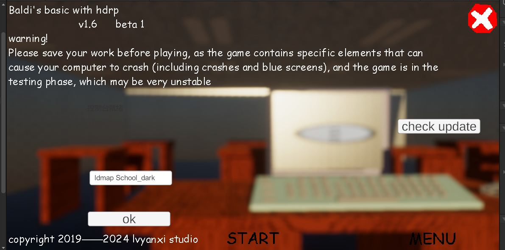

lvyanxi studio 发布了BBieal with HDRP1.6的第一个测试，据规划，1.6将有3个beta版本
这个版本引入了外接程序，所以需要安装附加组件包，但是不用担心，lvyanxi表示将推出对应的启动器，可以自动安装
值得一提的是，lvyanxi准备在null（游戏人物）讲完话后让pc蓝屏，原理是利用了Windows的蓝屏api，但是这也意味着游戏无法发布在Linux平台上
此外，lvyanxi studio将推出几种有意思的模式，如HDRP，但是清朝画质模式，不过还在构建中